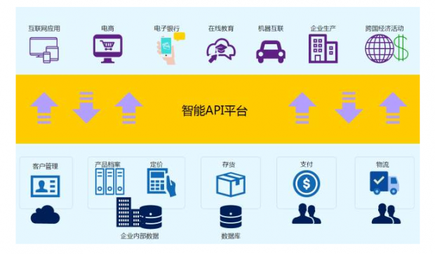

$ export OCP_WILDCARD_DOMAIN=apps.na39.openshift.opentlc.com
$ export OCP_PROJECT_PREFIX=ksoong
$ export ADMIN_PASSWORD=admin
$ export MASTER_PASSWORD=masterAPI 管理
Table of Contents
API 经济 - 从封闭走向开放
透过 API 的开放，提升服务平台价值，进一步形成生态系，带来「API经济」正快速崛起。Intel、IBM、Red Hat 等大厂皆展开布局与併购行动，新创业者也相继成立抢食市场大饼。

随着云运算、社交网路、移动应用等新兴科技的发展，一些创新的商业模式陆续出现下，API(Application Programming Interface 应用程序接口)已从系统应用开发中的信息交互/相互调运，转变为成为可获利的商品。透过 API 的开放，可提升服务平台价值，进一步形成生态系，带来「API经济」。新世纪以来，一些创新型公司，如互联网电子商务行业，网络科技的相关从业者，即以开放 API 的方式，快速扩张业务规模，创造庞大经济效益。
-
拍卖网站 eBay 在 2000 年开放 API，目前已累积约 2,000 个应用服务，透过 API 而来的交易约占总交易的 6 成。
-
Amazon 于 2002 年开放 API，让小型零售商在其电子商务平台开店，Amazon 因此也增加商品种类与提高交易金额，之后在 Amazon Web Services 云端服务也开放服务接口，协助新创企业以较低成本构建所需资讯应用环境，造就 Amazon 在云端服务市场的领先地位。
-
阿里也是 API 经济的实践者，天猫、淘宝、物流、支付等核心系统都是基于 API 去构建。
目前 API 经济已从网络服务拓展到电信、金融、政府，在中国可以说是拓展到了各行各业，包括一些中小科技企业、民营企业，一个有力的例子即 BATJ(阿里巴巴、腾讯、百度、京东)积极开放自家 API、广泛的参与到金融、政府等各领域 IT 建设，并将这些领域与自家的生态挂钩。
3Scale 安装
安装准备
-
确保 OpenShift 安装并正常运行。
设定环境变量
安装
1 - 创建一个工程
oc new-project $OCP_PROJECT_PREFIX-3scale-amp --display-name="3scale-amp" --description="3scale AMP component"2 - 根据模版创建 16 个容器部署对象
oc new-app -f 3scale-amp-2.2.yml \
--param ADMIN_PASSWORD=$ADMIN_PASSWORD \
--param TENANT_NAME=$OCP_PROJECT_PREFIX-3scale \
--param MASTER_NAME=$OCP_PROJECT_PREFIX-master \
--param MASTER_PASSWORD=$MASTER_PASSWORD \
--param WILDCARD_DOMAIN=$OCP_WILDCARD_DOMAIN > /tmp/3scale_amp_provision_details.txt3 - 数据持久层容器部署
$ for x in backend-redis system-memcache system-mysql system-redis zync-database; do echo Resuming dc: $x; sleep 2; oc rollout resume dc/$x; done4 - 后台 listener 和 worker 部署
$ for x in backend-listener backend-worker; do echo Resuming dc: $x; sleep 2; oc rollout resume dc/$x; done5 - system-app 部署
$ oc rollout resume dc/system-app6 - 系统和后台工具集部署
$ for x in system-resque system-sidekiq backend-cron system-sphinx; do echo Resuming dc: $x; sleep 2; oc rollout resume dc/$x; done7 - apicast 网关部署
$ for x in apicast-staging apicast-production; do echo Resuming dc: $x; sleep 2; oc rollout resume dc/$x; done8 - 其它部署
$ for x in apicast-wildcard-router zync; do echo Resuming dc: $x; sleep 2; oc rollout resume dc/$x; done安装验证
1 - 查看运行的容器
$ oc get pods
NAME READY STATUS RESTARTS AGE
apicast-production-1-zxwkn 1/1 Running 0 22h
apicast-staging-1-2t79s 1/1 Running 0 22h
apicast-wildcard-router-1-vs8nn 1/1 Running 0 22h
backend-cron-1-t5c5l 1/1 Running 0 22h
backend-listener-1-88j9x 1/1 Running 0 23h
backend-redis-1-qpdsq 1/1 Running 0 23h
backend-worker-1-hvkjz 1/1 Running 0 23h
system-app-1-2m8bf 3/3 Running 0 22h
system-memcache-1-znf26 1/1 Running 0 23h
system-mysql-1-bl7p9 1/1 Running 0 23h
system-redis-1-52zs4 1/1 Running 0 23h
system-resque-1-r2bw5 2/2 Running 0 22h
system-sidekiq-1-4rdxv 1/1 Running 0 22h
system-sphinx-1-999xt 1/1 Running 0 22h
zync-1-nr4st 1/1 Running 0 22h
zync-database-1-tw4gs 1/1 Running 0 23h2 - 查看容器的镜像
使用 https://registry-console-default.apps.na39.openshift.opentlc.com/registry 可以查看内部镜像仓库。
3 - 查看 Mysql 数据库
$ oc rsh $(oc get pod | grep mysql | awk '{print $1}')
$ mysql -uroot system
mysql> show tables;4 - 登录 3Scale 管理界面，执行如下命令获取登录 URL
$ cat /tmp/3scale_amp_provision_details.txt | grep Login
Login on https://ksoong-3scale-admin.apps.na39.openshift.opentlc.com as admin/adminCoolStore 服务
本部分部署 https://github.com/jbossdemocentral/coolstore-microservice 中提供的部分服务。coolstore-template.yml 为服务部署所需的模版。
服务部署
1 - 创建一个 Project
$ oc new-project $OCP_PROJECT_PREFIX-coolstore --display-name="CoolStore API" --description="CoolStore API Business Services"2 - 创建一个模版
$ oc create -f coolstore-template.yml3 - 创建应用
$ oc new-app --template=coolstore4 - 创建 Inventory 和 Catalog 服务路径
$ oc create route edge inventory-route --service=inventory
$ oc create route edge catalog-route --service=catalog5 - 查看服务运行情况
$ oc get pods | grep Running
cart-1-xjg94 1/1 Running 0 2h
catalog-1-kpff9 1/1 Running 0 11m
catalog-mongodb-1-ssbl5 1/1 Running 0 2h
inventory-1-clq7v 1/1 Running 0 2h
inventory-postgresql-1-d7l7c 1/1 Running 0 2h6 - 查看服务路径
$ oc get routes
NAME HOST/PORT PATH SERVICES PORT TERMINATION WILDCARD
catalog-route catalog-route-ksoong-coolstore.apps.na39.openshift.opentlc.com catalog <all> edge None
inventory-route inventory-route-ksoong-coolstore.apps.na39.openshift.opentlc.com inventory <all> edge None服务测试
服务描述 Swagger 文件路径如下：
可以通过 http://editor.swagger.io/ 进行服务测试。
有效的 Inventory itemId 有：
-
329299
-
329199
-
165613
-
165954
-
444434
-
444435
-
444436
REST 服务管理
REST 服务管理具体要求如下：
-
Both the services Inventory & Catalog should be managed separately.
-
Each service should have a basic plan and a premium plan, so that WebRetail Inc. can provide differentiated plans to users.
-
basic plan should not have the ability to invoke CRUD operations on the services.
-
premium plan should not have impose any restrictions.
-
basic plan users should be limited to only 5 API requests per hour for each service.
-
-
Metrics should be set up such that usage details can be viewed for each method separately.
创建账户和用户
根据如下步骤创建两个账户和两个用户。
-
在 3Scale 管理门户选择
Developers→Accounts，点击绿色Create按钮。 -
在 Create new Account 界面填入如下内容
-
Username -
catalog_user -
Email -
catalog@example.com -
Password -
redhat -
Organization/Group Name -
catalog_account
-
-
重复如上步骤，在 Create new Account 界面填入如下内容，创建另一个用户
-
Username -
inventory_user -
Email -
inventory@example.com -
Password -
redhat -
Organization/Group Name -
inventory_account
-
Catalog 服务
本部分创建 3Scale Service，对接 Catalog 服务。
创建 Service
-
在 3Scale 管理门户选择
API -
在 API 页面右上角，点击
Create Service按钮-
Name - catalog_service
-
System Name - catalog_service
-
-
点击 Create Service，创建服务
创建 Application Plan
-
选择
catalog_service→Published Application Plans→Create Application Plan，-
Name - catalog_app_plan
-
System name - catalog_app_plan
-
-
点击 Create Application Plan
创建 Application
本部分关联 Application 和 用户。
-
选择
Developers→inventory_account，创建 Application-
Application plan - catalog_app_plan
-
Service plan - Default
-
Name - catalog_app
-
Description - catalog_app
-
-
点击 Create Application 后生成了一个 User Key
a1fb905cd95c19cd9341ddd514e6ec65
在 AMP 中创建 route
$ oc create route edge catalog-apicast-prod --service=apicast-production --hostname=catalog-apicast-prod-$OCP_PROJECT_PREFIX.$OCP_WILDCARD_DOMAIN
$ oc create route edge catalog-apicast-staging --service=apicast-staging --hostname=catalog-apicast-staging-$OCP_PROJECT_PREFIX.$OCP_WILDCARD_DOMAIN
$ oc get route | grep catalog
catalog-apicast-prod catalog-apicast-prod-ksoong.apps.na39.openshift.opentlc.com apicast-production gateway edge None
catalog-apicast-staging catalog-apicast-staging-ksoong.apps.na39.openshift.opentlc.com apicast-staging gateway edge NoneService Integration
-
在 3Scale 管理门户选择
APIs -
在 Application Plans 中 publish APP Plan
-
在 Integration 关联 Base, Production, Staging URL:
服务测试
$ curl -k https://catalog-apicast-prod-ksoong.apps.na39.openshift.opentlc.com/api/products?user_key=a1fb905cd95c19cd9341ddd514e6ec65Inventory 服务
$ oc create route edge inventory-apicast-prod --service=apicast-production --hostname=inventory-apicast-prod-$OCP_PROJECT_PREFIX.$OCP_WILDCARD_DOMAIN
$ oc create route edge inventory-apicast-staging --service=apicast-staging --hostname=inventory-apicast-staging-$OCP_PROJECT_PREFIX.$OCP_WILDCARD_DOMAIN
$ oc get routes | grep inventory
inventory-apicast-prod inventory-apicast-prod-ksoong.apps.na39.openshift.opentlc.com apicast-production gateway edge None
inventory-apicast-staging inventory-apicast-staging-ksoong.apps.na39.openshift.opentlc.com apicast-staging gateway edge None同样的步骤配置 Inventory 服务，服务测试通过
$ curl -k https://inventory-apicast-staging-ksoong.apps.na39.openshift.opentlc.com:443/api/availability/329299?user_key=a9c469c13e637421225e82c3a0f665a5
$ curl "https://inventory-apicast-prod-ksoong.apps.na39.openshift.opentlc.com:443/api/availability/329299?user_key=a9c469c13e637421225e82c3a0f665a5"